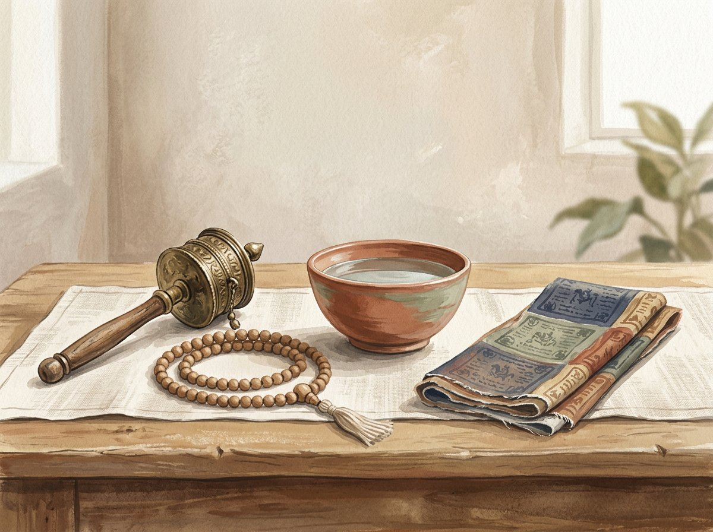

Prayer wheels
How a mani wheel is made, what it may contain, and why turning is accompanied by mantra.
A GUIDE TO TRADITIONS · OBJECTS AND PRACTICES
Buddhist traditions are not a collection of objects or one shared ritual. This guide introduces how prayer wheels, mantras, flags, mālās, offerings and temple practices are used across different schools and cultures.

OBJECTS · TEXTS · INTENTION
A ritual object does not stand apart from the practice in which it is used. Some people value daily recitation and a home shrine; others follow monastic schedules, pilgrimage or meditation. Forms differ across Buddhist schools and regions.
The notes below are brief guides, not universal instructions. A word or symbol can carry different meanings; if you belong to a community, follow its explanations and customs.
EIGHT TOPICS · ONE GUIDE
Choose an object or practice to explore. These pages describe context and use without promising supernatural outcomes or suggesting that every form appears in every tradition.
TOPIC GUIDE
How a mani wheel is made, what it may contain, and why turning is accompanied by mantra.
What is called a mantra, and how formulas differ across lineages.
The meaning of lungta, texts printed on cloth and common readings of the five colours.
How beads help count repetitions and why interpretations of 108 vary.
Flowers, water, light, incense and food as gestures of respect, generosity and gratitude.
Mantras, stupa circumambulation, meditation and other forms across Buddhist cultures.
Forms of prayer, mantras, and wishes for well-being across Buddhist traditions.
Core meditation approaches, their aims, and their connections with mantra and loving-kindness.